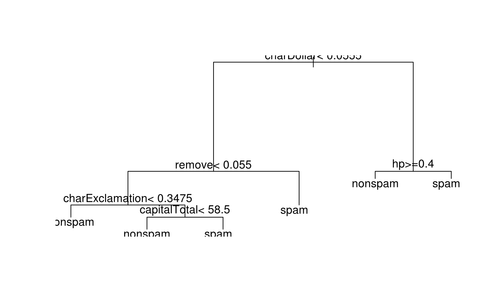

This introduction is about resampling.
Again, we consider the iris task and a simple classification tree here.
Additionally, we need to define how we want to resample. mlr3 comes with the following resampling strategies implemented:
mlr_resamplings$keys()
#> [1] "bootstrap" "custom" "cv" "holdout" "repeated_cv"
#> [6] "subsampling"The experiment conducted in the introduction on train/predict/score is equivalent to a simple “holdout”, so let’s consider this one first.
resampling = mlr_resamplings$get("holdout")
print(resampling)
#> <ResamplingHoldout> with 1 iterations
#> Parameters: ratio=0.666666666666667
#>
#> Public: clone, has_duplicates, hash, id, instance, instantiate,
#> is_instantiated, iters, par_set, par_vals, stratify, test_set,
#> train_set
print(resampling$par_set)
#> ParamSet: parset
#> Parameters:
#> ratio [numeric]: [0, 1]
print(resampling$par_vals)
#> $ratio
#> [1] 0.6666667To change the ratio to \(0.8\), we simply overwrite the slot:
Now, we can pass all created objects to the resample() function to get an object of class ResampleResult:
rr = resample(task, learner, resampling)
#> Running learner 'classif.rpart' on task 'iris (iteration 1/1)' ...
print(rr)
#> ResampleResult of learner 'iris' on task 'classif.rpart' with 1 iterations
#> Measure Min. 1st Qu. Median Mean 3rd Qu. Max.
#> mmce 0.03333333 0.03333333 0.03333333 0.03333333 0.03333333 0.03333333
#> Sd
#> NABefore we go into more detail, lets change the resampling to a 3-fold cross-validation to better illustrate what operations are possible with a resampling result.
resampling = mlr_resamplings$get("cv")
resampling$par_vals = list(folds = 3)
rr = resample(task, learner, resampling)
#> Running learner 'classif.rpart' on task 'iris (iteration 1/3)' ...
#> Running learner 'classif.rpart' on task 'iris (iteration 2/3)' ...
#> Running learner 'classif.rpart' on task 'iris (iteration 3/3)' ...
print(rr)
#> ResampleResult of learner 'iris' on task 'classif.rpart' with 3 iterations
#> Measure Min. 1st Qu. Median Mean 3rd Qu. Max. Sd
#> mmce 0 0.04 0.08 0.06 0.09 0.1 0.05291503We can do different things with resampling results, e.g.:
rr$performance
#> hash task_id learner_id resampling_id iteration mmce
#> 1: c9e456bbea4bf8d2 iris classif.rpart cv 1 0.00
#> 2: c9e456bbea4bf8d2 iris classif.rpart cv 2 0.10
#> 3: c9e456bbea4bf8d2 iris classif.rpart cv 3 0.08
rr$performance[, mean(mmce)]
#> [1] 0.06rr$resampling
#> Instantiated <ResamplingCV> with 3 iterations
#> Parameters: folds=3
#>
#> Public: clone, has_duplicates, hash, id, instance, instantiate,
#> is_instantiated, iters, par_set, par_vals, stratify, test_set,
#> train_set
rr$resampling$iters
#> [1] 3
rr$resampling$test_set(1)
#> [1] 1 3 4 5 6 8 10 14 17 19 26 31 34 36 40 41 42
#> [18] 43 44 46 50 55 56 57 59 62 65 74 76 79 80 86 87 88
#> [35] 92 93 101 102 113 114 121 125 133 137 139 140 142 143 148 150
rr$resampling$test_set(2)
#> [1] 2 7 9 11 12 15 16 20 23 25 27 29 30 33 35 38 51
#> [18] 52 54 58 63 64 66 68 69 71 73 75 78 90 91 95 97 110
#> [35] 111 112 118 119 123 124 126 128 130 131 132 134 135 144 146 147
rr$resampling$test_set(3)
#> [1] 13 18 21 22 24 28 32 37 39 45 47 48 49 53 60 61 67
#> [18] 70 72 77 81 82 83 84 85 89 94 96 98 99 100 103 104 105
#> [35] 106 107 108 109 115 116 117 120 122 127 129 136 138 141 145 149e = rr$experiment(iter = 1)
e$model
#> n= 100
#>
#> node), split, n, loss, yval, (yprob)
#> * denotes terminal node
#>
#> 1) root 100 64 virginica (0.2900000 0.3500000 0.3600000)
#> 2) Petal.Length< 2.45 29 0 setosa (1.0000000 0.0000000 0.0000000) *
#> 3) Petal.Length>=2.45 71 35 virginica (0.0000000 0.4929577 0.5070423)
#> 6) Petal.Width< 1.75 39 5 versicolor (0.0000000 0.8717949 0.1282051) *
#> 7) Petal.Width>=1.75 32 1 virginica (0.0000000 0.0312500 0.9687500) *If you want to compare multiple learners, you should use the same resampling per task to reduce the variance of the performance estimation. Until now, we have just passed a resampling strategy to resample(), without specifying the actual splits into training and test. Here, we manually instantiate the resampling:
resampling = mlr_resamplings$get("cv")
resampling$par_vals = list(folds = 3)
resampling$instantiate(task)
#> Instantiated <ResamplingCV> with 3 iterations
#> Parameters: folds=3
#>
#> Public: clone, has_duplicates, hash, id, instance, instantiate,
#> is_instantiated, iters, par_set, par_vals, stratify, test_set,
#> train_set
resampling$iters
#> [1] 3
resampling$train_set(1)
#> [1] 5 7 8 15 16 20 21 24 27 30 32 36 40 42 50 52 53
#> [18] 54 58 59 60 61 63 69 71 72 73 74 75 76 78 88 97 105
#> [35] 108 110 111 115 122 125 126 127 128 129 131 134 140 142 146 148 1
#> [52] 2 3 4 6 9 10 13 19 28 29 31 34 38 39 51 62 64
#> [69] 66 67 70 79 80 81 82 84 87 89 92 93 94 96 99 102 106
#> [86] 109 112 113 116 119 120 123 124 133 135 136 138 141 143 150If we now pass this instantiated object to resample, the pre-calculated training and test splits will be used for both learners:
learner1 = mlr_learners$get("classif.rpart") # simple classification tree
learner2 = mlr_learners$get("classif.dummy") # dummy learner, prediction majority class
rr1 = resample(task, learner1, resampling)
#> Running learner 'classif.rpart' on task 'iris (iteration 1/3)' ...
#> Running learner 'classif.rpart' on task 'iris (iteration 2/3)' ...
#> Running learner 'classif.rpart' on task 'iris (iteration 3/3)' ...
rr2 = resample(task, learner2, resampling)
#> Running learner 'classif.dummy' on task 'iris (iteration 1/3)' ...
#> Running learner 'classif.dummy' on task 'iris (iteration 2/3)' ...
#> Running learner 'classif.dummy' on task 'iris (iteration 3/3)' ...
setequal(rr1$experiment(1)$train_set, rr2$experiment(1)$train_set)
#> [1] TRUEWe can also combine the created result objects into a BenchmarkResult (see below for an introduction to simple benchmarking):
bmr = rr1$combine(rr2)
bmr$performance
#> hash task_id learner_id resampling_id mmce
#> 1: 280f5245cf45b080 iris classif.rpart cv 0.04
#> 2: 280f5245cf45b080 iris classif.rpart cv 0.06
#> 3: 280f5245cf45b080 iris classif.rpart cv 0.04
#> 4: bcdeccfa519dddeb iris classif.dummy cv 0.72
#> 5: bcdeccfa519dddeb iris classif.dummy cv 0.70
#> 6: bcdeccfa519dddeb iris classif.dummy cv 0.70Sometimes it is necessary to perform resampling with custom splits, e.g. to reproduce a study. For this purpose, splits can be manually set for ResamplingCustom:
resampling = mlr_resamplings$get("custom")
resampling$instantiate(task,
list(c(1:10, 51:60, 101:110)),
list(c(11:20, 61:70, 111:120))
)
#> Instantiated <ResamplingCustom> with 1 iterations
#> Parameters:
#>
#> Public: clone, has_duplicates, hash, id, instance, instantiate,
#> is_instantiated, iters, par_set, par_vals, stratify, test_set,
#> train_set
resampling$iters
#> [1] 1
resampling$train_set(1)
#> [1] 1 2 3 4 5 6 7 8 9 10 51 52 53 54 55 56 57
#> [18] 58 59 60 101 102 103 104 105 106 107 108 109 110
resampling$test_set(1)
#> [1] 11 12 13 14 15 16 17 18 19 20 61 62 63 64 65 66 67
#> [18] 68 69 70 111 112 113 114 115 116 117 118 119 120As comparing the performance of multiple learners on multiple tasks is a frequent task, mlr3 offers the benchmark() function for convenience. Internally, the resampling strategies are automatically instantiated for you, so that each learner sees the same split of the data.
# get some example tasks
tasks = mlr_tasks$mget(c("pima", "sonar", "spam"))
# get a dummy learner and a classification tree
learners = mlr_learners$mget(c("classif.dummy", "classif.rpart"))
# let the learners predict probabilities instead of class labels (required for AUC measure)
learners$classif.dummy$predict_type = "prob"
learners$classif.rpart$predict_type = "prob"
# compare via 10-fold cross validation
resamplings = mlr_resamplings$mget("cv")
# measure accuracy (acc) and area under the curve (AUC)
measures = mlr_measures$mget(c("acc", "auc"))
# create a BenchmarkResult object
bmr = benchmark(tasks, learners, resamplings, measures)
#> Running learner 'classif.dummy' on task 'sonar (iteration 2/10)' ...
#> Running learner 'classif.rpart' on task 'pima_indians (iteration 8/10)' ...
#> Running learner 'classif.rpart' on task 'spam (iteration 4/10)' ...
#> Running learner 'classif.dummy' on task 'sonar (iteration 9/10)' ...
#> Running learner 'classif.dummy' on task 'spam (iteration 2/10)' ...
#> Running learner 'classif.dummy' on task 'sonar (iteration 7/10)' ...
#> Running learner 'classif.rpart' on task 'spam (iteration 7/10)' ...
#> Running learner 'classif.dummy' on task 'pima_indians (iteration 10/10)' ...
#> Running learner 'classif.rpart' on task 'pima_indians (iteration 10/10)' ...
#> Running learner 'classif.rpart' on task 'spam (iteration 2/10)' ...
#> Running learner 'classif.dummy' on task 'spam (iteration 7/10)' ...
#> Running learner 'classif.dummy' on task 'pima_indians (iteration 2/10)' ...
#> Running learner 'classif.rpart' on task 'pima_indians (iteration 1/10)' ...
#> Running learner 'classif.dummy' on task 'spam (iteration 8/10)' ...
#> Running learner 'classif.rpart' on task 'sonar (iteration 10/10)' ...
#> Running learner 'classif.rpart' on task 'spam (iteration 8/10)' ...
#> Running learner 'classif.rpart' on task 'sonar (iteration 1/10)' ...
#> Running learner 'classif.dummy' on task 'pima_indians (iteration 8/10)' ...
#> Running learner 'classif.rpart' on task 'pima_indians (iteration 3/10)' ...
#> Running learner 'classif.dummy' on task 'sonar (iteration 4/10)' ...
#> Running learner 'classif.dummy' on task 'pima_indians (iteration 5/10)' ...
#> Running learner 'classif.rpart' on task 'pima_indians (iteration 6/10)' ...
#> Running learner 'classif.rpart' on task 'pima_indians (iteration 9/10)' ...
#> Running learner 'classif.rpart' on task 'spam (iteration 5/10)' ...
#> Running learner 'classif.dummy' on task 'sonar (iteration 10/10)' ...
#> Running learner 'classif.rpart' on task 'sonar (iteration 4/10)' ...
#> Running learner 'classif.rpart' on task 'spam (iteration 3/10)' ...
#> Running learner 'classif.rpart' on task 'spam (iteration 1/10)' ...
#> Running learner 'classif.dummy' on task 'spam (iteration 5/10)' ...
#> Running learner 'classif.rpart' on task 'sonar (iteration 7/10)' ...
#> Running learner 'classif.dummy' on task 'pima_indians (iteration 4/10)' ...
#> Running learner 'classif.dummy' on task 'sonar (iteration 1/10)' ...
#> Running learner 'classif.dummy' on task 'spam (iteration 3/10)' ...
#> Running learner 'classif.rpart' on task 'sonar (iteration 9/10)' ...
#> Running learner 'classif.dummy' on task 'pima_indians (iteration 3/10)' ...
#> Running learner 'classif.rpart' on task 'spam (iteration 6/10)' ...
#> Running learner 'classif.rpart' on task 'sonar (iteration 3/10)' ...
#> Running learner 'classif.dummy' on task 'sonar (iteration 5/10)' ...
#> Running learner 'classif.rpart' on task 'spam (iteration 9/10)' ...
#> Running learner 'classif.dummy' on task 'pima_indians (iteration 9/10)' ...
#> Running learner 'classif.dummy' on task 'spam (iteration 6/10)' ...
#> Running learner 'classif.rpart' on task 'sonar (iteration 6/10)' ...
#> Running learner 'classif.rpart' on task 'pima_indians (iteration 2/10)' ...
#> Running learner 'classif.rpart' on task 'pima_indians (iteration 5/10)' ...
#> Running learner 'classif.dummy' on task 'pima_indians (iteration 6/10)' ...
#> Running learner 'classif.dummy' on task 'spam (iteration 4/10)' ...
#> Running learner 'classif.rpart' on task 'pima_indians (iteration 4/10)' ...
#> Running learner 'classif.rpart' on task 'sonar (iteration 5/10)' ...
#> Running learner 'classif.dummy' on task 'spam (iteration 1/10)' ...
#> Running learner 'classif.rpart' on task 'spam (iteration 10/10)' ...
#> Running learner 'classif.dummy' on task 'sonar (iteration 6/10)' ...
#> Running learner 'classif.dummy' on task 'sonar (iteration 8/10)' ...
#> Running learner 'classif.dummy' on task 'spam (iteration 9/10)' ...
#> Running learner 'classif.rpart' on task 'sonar (iteration 8/10)' ...
#> Running learner 'classif.dummy' on task 'pima_indians (iteration 7/10)' ...
#> Running learner 'classif.rpart' on task 'pima_indians (iteration 7/10)' ...
#> Running learner 'classif.rpart' on task 'sonar (iteration 2/10)' ...
#> Running learner 'classif.dummy' on task 'sonar (iteration 3/10)' ...
#> Running learner 'classif.dummy' on task 'spam (iteration 10/10)' ...
#> Running learner 'classif.dummy' on task 'pima_indians (iteration 1/10)' ...Usually you want to look at the results aggregated over resampling iterations:
bmr$aggregated[, c("task_id", "learner_id", "acc", "auc")]
#> task_id learner_id acc auc
#> 1: sonar classif.rpart 0.7495238 0.7247953
#> 2: spam classif.rpart 0.8917655 0.8964850
#> 3: spam classif.dummy 0.6059606 0.5000000
#> 4: sonar classif.dummy 0.5323810 0.5000000
#> 5: pima_indians classif.rpart 0.7474026 0.7728679
#> 6: pima_indians classif.dummy 0.6509911 0.5000000We can aggregate it further, i.e. if we are interested which learner performed best over all tasks:
bmr$aggregated[, list(acc = mean(acc), auc = mean(auc)), by = "learner_id"]
#> learner_id acc auc
#> 1: classif.rpart 0.7962306 0.7980494
#> 2: classif.dummy 0.5964442 0.5000000Unsurprisingly, the classification tree outperformed the dummy learner.
As a BenchmarkResult is basically a collection of multiple ResampleResult, we can extract specific ResampleResult using the stored hashes:
tab = bmr$aggregated[task_id == "spam" & learner_id == "classif.rpart"]
print(tab)
#> hash task_id learner_id resampling_id acc auc
#> 1: 3d80897cfa578a7d spam classif.rpart cv 0.8917655 0.896485
rr = bmr$resample_result(tab$hash)We can now investigate this resampling and even single experiments using the previously introduced API:
rr$aggregated
#> acc auc
#> 0.8917655 0.8964850
# get the iteration with worst AUC
worst = rr$performance[which.min(auc), c("iteration", "auc")]
print(worst)
#> iteration auc
#> 1: 5 0.8670611
# get the corresponding experiment
e = rr$experiment(worst$iteration)
# get the model and plot it
library(rpart)
plot(e$model)
text(e$model)